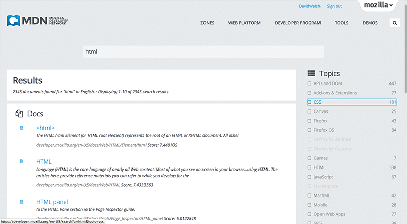
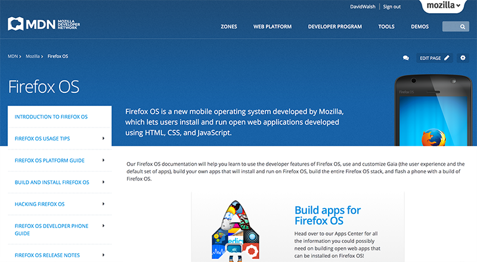
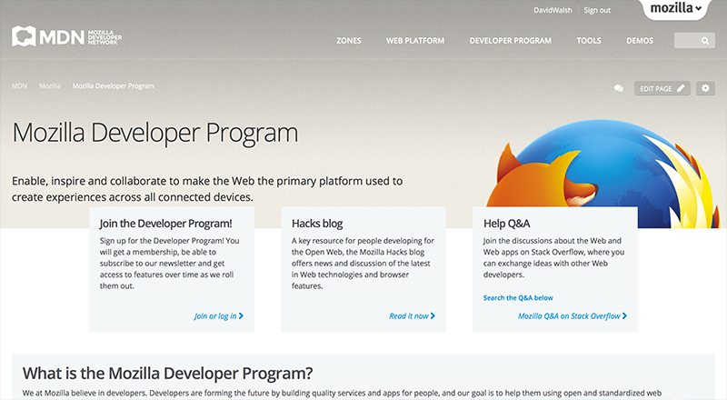
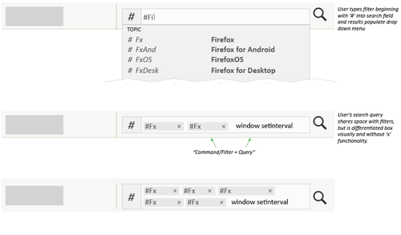
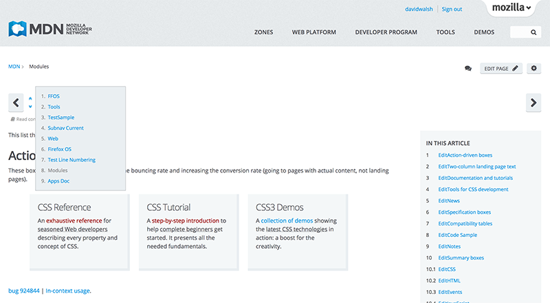

早在去年夏天，Mozilla 開發者社群網站 (Developer Network，MDN) 平台就開始醞釀大幅改版，目的在將托管於第三方的解決方案，轉移到我們自訂的 Django 應用。Mozilla 將本次平台改動專案稱為「Kuma」，是 MDN 後續重大升級的基礎。此外，完全重新設計的前端介面，除了新增多項功能之外，亦強化其可用性與簡單易用等特性。接著讓我們快速介紹 MDN 的新版介面，還有未來即將添增的新功能！
MDN 新功能
強化搜尋功能
絕大多數的使用者在進入 MDN 首頁之後，會先尋找自己所需的說明文章。也因此，Mozilla 這次將搜尋功能改置於網頁的正中央：

我們同時為搜尋作業添增了篩選機制，讓使用者可根據自己的特殊需求，縮小可能的搜尋結果：

從技術面的角度來看，我們改以 Elasticsearch 引擎提供搜尋功能。除了持續強化檢索與篩選功能之外，並可隨時添增新的搜尋功能。Mozilla 也將根據所收到的反饋意見來微調搜尋功能，讓大家都能更快找到最適合自己需求的說明文件。
瀏覽更簡單
在前一代的 MDN 設計中，要從目前文件中再找出另一份文件極不容易，因此我們以二種方式修正了此情況。第一就是預先分為不同的內容區塊，第二再針對使用者輸入的主題來建立瀏覽方式。我們先依據 MDN 最重要的主題而分為六大內容：Persona、Firefox、Firefox OS、Firefox Marketplace、附加元件 (Add-ons)、應用程式中心 (App Center)。

內容分類專區 (ZONES)
新的 MDN 內容分類，將完整蒐集使用者所需主題的相關文章，其中涵蓋該主題的基本說明、API 詳細資訊，直到相關進階技術應有盡有。Mozilla 將先從下列分類開始逐漸擴增：
Firefox OS
Firefox OS 分類之下再分為：
- 詳細平台指南
- 建構與安裝細節
- 協助開發 Firefox OS
- App 設計與開發
Firefox Marketplace
Marketplace 分類之下再分為：
- App 提交與審查
- App 發佈與後續款項
- Marketplace API 資訊
應用程式中心 (App Center)
應用程式中心分類之下再分為：
- 快速入門指南
- 設計與建構秘訣
- App 發佈指南
- API 參考
Persona
Persona 分類之下再分為：
- 在自己網站上使用 Persona 的相關說明
- 成為身分識別服務供應者
- Persona 專案細節
Firefox
Firefox 分類之下再分為：
- Firefox 附加元件完整概述
- Firefox 內部機制資訊
- Firefox 開發與貢獻的詳細說明
附加元件 (Add-ons)
附加元件區塊之下再分為：
- XUL 擴充套件資訊
- 最佳實作秘訣
- 佈景主題設計
- 附加元件發佈指南
「另請參閱 (See Also)」連結
任何 Wiki 形式的頁面，均可能出現 Mozilla 另外設計的「另請參閱 (See Also)」連結。此功能將根據使用者目前檢視中的文件，再提供可能的相關文章。
各個區塊中的附屬瀏覽與「另請參閱」側邊欄，都是根據 Wiki 文件所列的基本連結所設立。只要你想為 MDN 貢獻任何內容，都可輕鬆添增連結並進行瀏覽。另外亦可透過 MDN 的巨集語言 ─ Kumascript ─ 建立這些連結列表。針對「另請參閱」連結的自動產生機制，Mozilla 撰文團隊另付出了許多心力，讓貢獻者不需手動操作也能找出其他相關文章。
頂層瀏覽 (Top level navigation)
使用者可於頂層瀏覽中看到五大區塊：
- 上述的內容分類「專區」
- Web 平台 (Web Platform)，針對技術、參考、指南，提供更多資訊的相關連結
- Developer Program ─ 為了協助開發者，並進一步建立長期的合作關係與管道，我們另外創立了 Mozilla 開發者方案 (Mozilla Developer Program)。我們還有許多能不斷延伸方案的酷炫計畫與想法，也期待你的加入！快來報名以獲得會員資格並訂閱電子報。往後你就可立即嘗鮮 Mozilla 所發佈的新功能
- 工具 ─ 進一步了解 Firefox 開發者工具與其功能
- Demo─ 直接連至 Demo Studio

強化 Kumascript 巨集功能
Kumascript 是 MDN 所使用的動態巨集語言，專為讀取外部 RSS 內容所配置。目前StackOverflow 與 Mozilla Hacks 部落格的文章，就是透過閱讀器功能而進一步推播到 MDN 上。你可參閱 MDN:Common macro 並檢視 fetchJSONResource 與 fetchHTTPResource 函式 (用於 Wiki 文章中協助顯示 RSS 內容)。
未來功能
重新設計的 MDN 視覺外觀，不過是 Mozilla 要讓 MDN 更動態、更簡單易用的起頭而已。MDN 開發團隊與使用者經驗 (UX) 團隊另將於 2014 年推出更多新功能。接著簡述其中幾項讓你一睹為快！
動態搜尋篩選 (Dynamic Search Filtering)
為了提高搜尋效率，Mozilla 規劃建構「#」前綴字元的文字篩選機制，並將之添增到最基本的搜尋功能中。在使用者進入搜尋結果頁面之後，將可避免額外的篩選動作。

Holly Habbstritt 在自己的部落格中介紹此查詢系統。可到她的部落格了解建構細節。
文件導覽器 (Docs Navigator)
假設你完成了某個搜尋作業，點擊頁面所列出來的第一個連結之後，你還想繼續往下觀看頁面中的其他文章。將來你不需要退回結果頁面再找其他文章，而能透過 Wiki 頁面 (如果使用者根據搜尋結果所導來) 顯示的文件導覽器，直接觀看上一個/下一個結果；使用者亦可透過原來的搜尋作業，檢視完整的結果清單。

又是一個可讓你迅速找到自己所需主題的簡單方法！
重新設計的 Demo Studio 與 Dev Derby
緊接著將重新設計 MDN 上的 Demo Studio 與 Dev Derby。我們現在已經開始審核絕佳的設計外觀，希望能在 2014 年初正式運作。
如果你對新版 MDN 有任何建議或發現任何錯誤，請儘快通知我們。
從 2014 年起，Mozilla 期待能提供更豐富的 MDN 內容。針對說明文件與 Web 技術的查閱、撰文、使用經驗等要素，MDN 平台將持續擴充並強化相關機制，為使用者提供更完整的資訊。